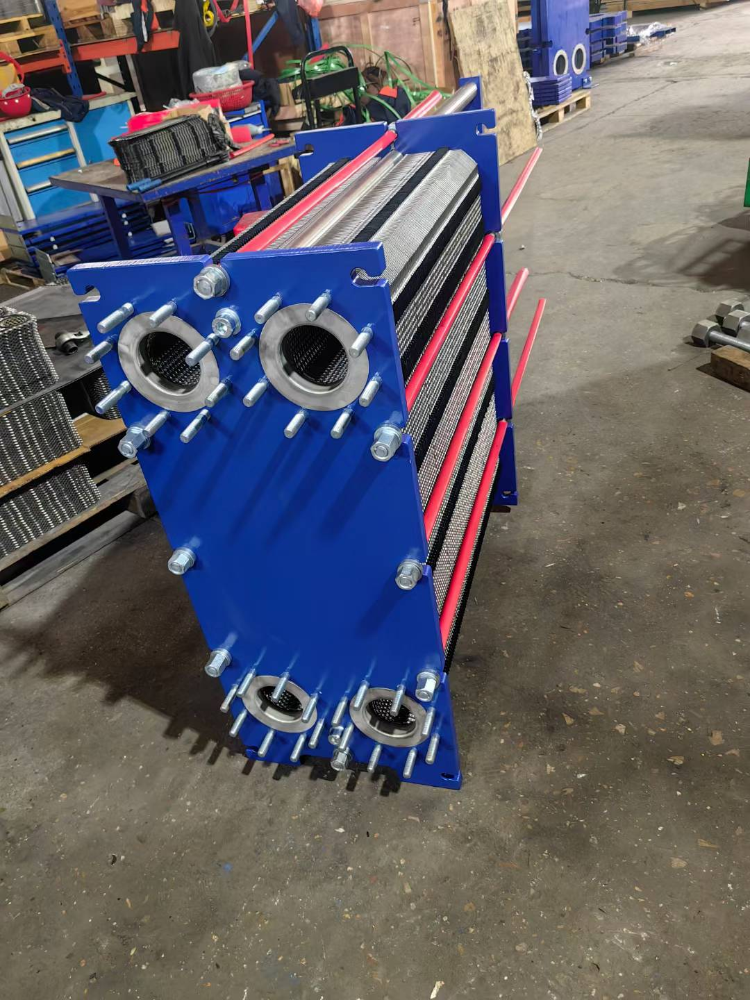
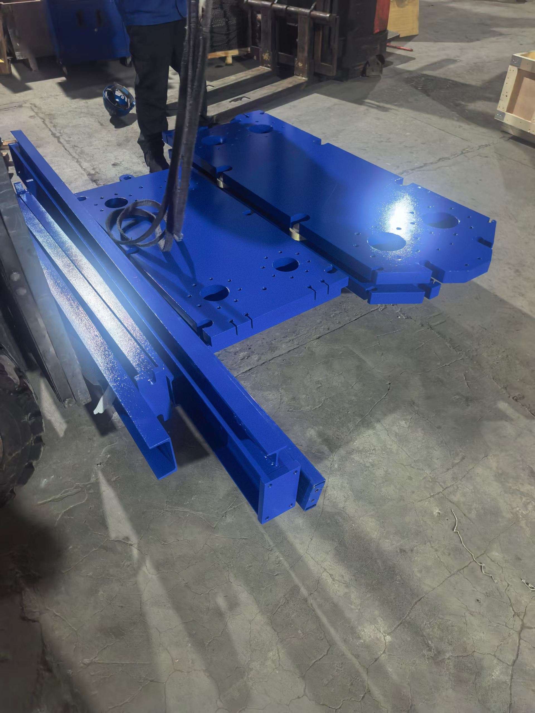
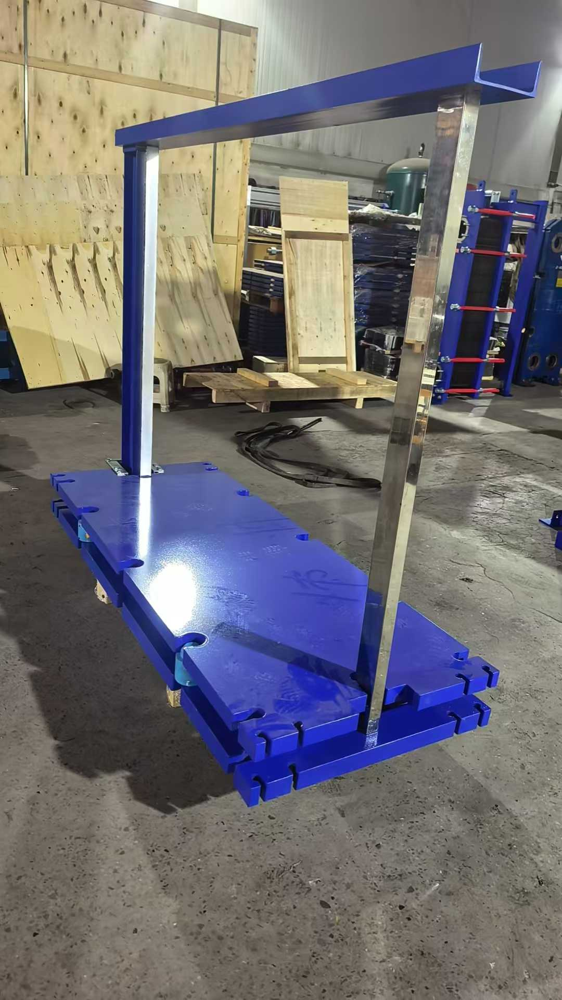
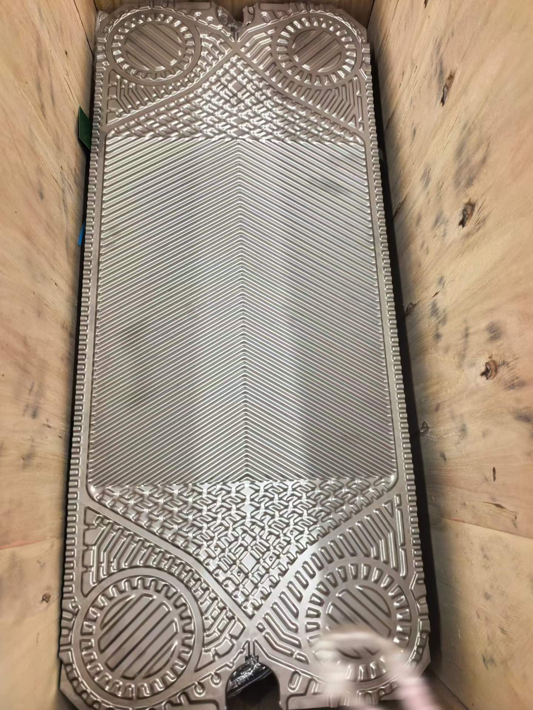
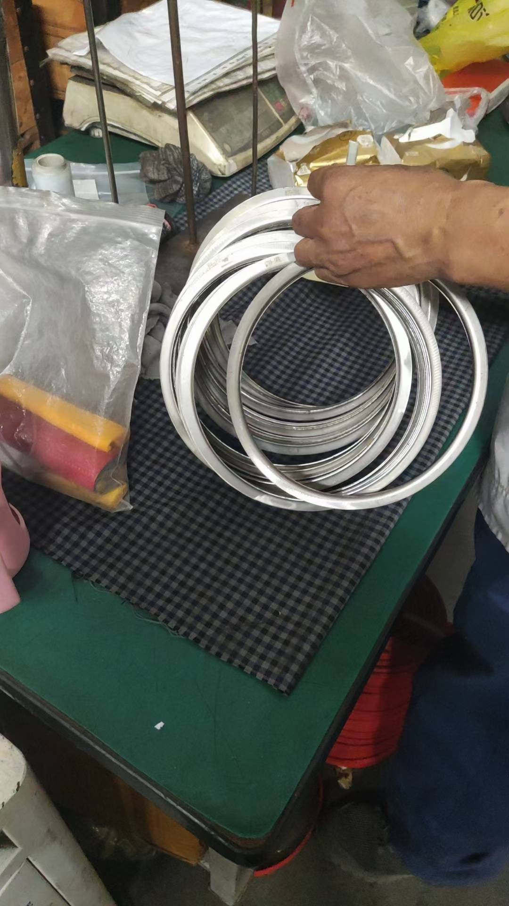

阿法拉伐船用板式换热器与船用分油机常用型号介绍
引言
阿法拉伐（Alfa Laval）是全球船用热交换和流体分离设备领域的绝对领导者。在远洋船舶上，几乎每艘船都配备了阿法拉伐的板式换热器或分油机——从中央冷却系统到燃油净化，从造水机到润滑油处理，阿法拉伐的产品覆盖了船舶机舱几乎所有核心换热和分离环节。
本文将系统介绍阿法拉伐船用板式换热器和船用分油机的常用型号，帮助船东、轮机员和设备选型工程师快速了解各型号的技术参数与适用场景。

一、阿法拉伐船用板式换热器常用型号
1.1 M10 系列 — 船用板冷器的"标杆"
M10 是阿法拉伐船用板式换热器中应用最广泛的型号，几乎是万吨级散货船中央冷却系统的标配。
核心参数：
| 参数 | M10-BFM | M10-BFD |
|---|---|---|
| 单板换热面积 | 0.25 m² | 0.25 m² |
| 最大板片数 | 150 | 150 |
| 最大换热面积 | 37.5 m² | 37.5 m² |
| 接口口径 | DN100 | DN150 |
| 设计压力 | PN10 / PN16 | PN10 / PN16 |
| 板片材质 | 316L / SMO 254 / 钛 | 316L / SMO 254 / 钛 |
| 垫片材质 | EPDM / NBR / CR | EPDM / NBR / CR |
| 夹紧尺寸 A | 依板片数而定 | 依板片数而定 |
典型应用：
- 中央冷却器（低温淡水↔海水）
- 缸套水冷却器
- 滑油冷却器

选型优势：
- ClipGrip™ 免胶垫片系统，船员可自行更换，无需专业涂胶工序
- 板片可选用钛材（Ti Grade 1），耐海水腐蚀
- 配件全球供应充足，主要港口均有库存
- 多数船级社认证齐全（CCS、DNV、LR、ABS、BV）
1.2 M15 系列 — 中大型船舶首选
M15 是 M10 的放大版，适用于更大换热面积的工况，常见于 3~8 万吨散货船和油轮的中央冷却系统。
核心参数：
| 参数 | M15-BFM | M15-BFD |
|---|---|---|
| 单板换热面积 | 0.44 m² | 0.44 m² |
| 最大板片数 | 250 | 250 |
| 最大换热面积 | 110 m² | 110 m² |
| 接口口径 | DN150 | DN200 |
| 设计压力 | PN10 / PN16 | PN10 / PN16 |
| 板片材质 | 316L / SMO 254 / 钛 | 316L / SMO 254 / 钛 |

典型应用：
- 大型散货船中央冷却器
- 油轮中央冷却器
- LNG 船辅助冷却系统
1.3 M20 系列 — VLCC 和超大型船舶专用
M20 是阿法拉伐船用板冷器中的旗舰型号，专为 VLCC（超大型油轮）、大型集装箱船和邮轮的中央冷却系统设计，换热面积可达数百平方米。
核心参数：
| 参数 | M20-BFM | M20-BFD |
|---|---|---|
| 单板换热面积 | 0.72 m² | 0.72 m² |
| 最大板片数 | 350 | 350 |
| 最大换热面积 | 252 m² | 252 m² |
| 接口口径 | DN200 | DN250 |
| 设计压力 | PN10 / PN16 | PN10 / PN16 |
| 板片材质 | 316L / SMO 254 / 钛 | 316L / SMO 254 / 钛 |

典型应用：
- VLCC（20~30万吨级油轮）中央冷却器
- 大型集装箱船（10000+TEU）中央冷却器
- 豪华邮轮分区冷却系统
1.4 T20P 系列 — 小型/辅助换热专用
T20P 是阿法拉伐中小型板式换热器中的经典型号，适合辅助设备和中小换热工况。
核心参数：
| 参数 | T20P |
|---|---|
| 单板换热面积 | 0.18 m² |
| 最大板片数 | 85 |
| 最大换热面积 | 15.3 m² |
| 接口口径 | DN65 |
| 设计压力 | PN10 / PN16 |
| 板片材质 | 316L / 钛 |

典型应用：
- 辅助设备冷却（空压机、舵机液压油等）
- 小型船舶中央冷却器
- 燃油预热器
- 造水机板式蒸发器/冷凝器
1.5 钎焊板式换热器（Brazed PHE）— CB 系列
阿法拉伐 CB 系列钎焊板式换热器采用铜或镍钎焊工艺，无密封垫片，零泄漏风险，特别适用于制冷和冷媒系统。
常用型号：
| 型号 | 换热面积 | 接口 | 典型应用 |
|---|---|---|---|
| CB30 | 0.04~0.5 m² | DN20~DN25 | 小型制冷蒸发器/冷凝器 |
| CB50 | 0.1~1.2 m² | DN25~DN32 | 空调冷水机组 |
| CB76 | 0.2~3.5 m² | DN40 | 大型冷水机组冷凝器 |
| CB110 | 0.3~8.5 m² | DN50 | 集装箱冷藏机组 |
1.6 阿法拉伐船用板式换热器型号选择对照
| 船舶类型 | 中央冷却器 | 滑油冷却器 | 缸套水冷却器 | 辅助冷却 |
|---|---|---|---|---|
| 小型货船（<5000DWT） | T20P | T20P | T20P | T20P |
| 散货船（3~8万吨） | M15 | M10 | M10 | T20P |
| 油轮（10~30万吨） | M20 | M15 | M10 | T20P |
| 集装箱船（8000+TEU） | M20 | M15 | M10 | T20P |
| 邪邮轮 | M15/M20 | M10 | M10 | T20P |

二、阿法拉伐船用分油机常用型号
2.1 什么是船用分油机？
船用分油机（Marine Oil Separator / Purifier）是利用离心力分离燃油和润滑油中水分、杂质和固体颗粒的设备。在船舶运行中，分油机是保证燃油和滑油品质的关键设备：
- 燃油分油机：净化重油（HFO）/轻油（MDO），去除水分和灰分，保证主机燃烧品质
- 滑油分油机：净化主机/辅机循环润滑油，去除磨损金属颗粒和水分
阿法拉伐是全球船用分油机市场的绝对主导者，市场份额超过 70%。
2.2 ALCAP 系列 — 燃油分油机旗舰
ALCAP（Alfa Laval Centrifugal Automatic Purifier）是阿法拉伐最新一代燃油分油机，采用EPC 60 控制单元实现全自动运行和智能排渣。
常用型号：
| 型号 | 处理量（HFO） | 推荐船舶 | 重量 | 控制单元 |
|---|---|---|---|---|
| ALCAP F105X | 1,200 L/h | 小型船/辅助 | 260 kg | EPC 60 |
| ALCAP F205X | 2,400 L/h | 中型货船 | 380 kg | EPC 60 |
| ALCAP F305X | 4,800 L/h | 大型散货/油轮 | 520 kg | EPC 60 |
| ALCAP F505X | 9,600 L/h | VLCC/超大型船 | 720 kg | EPC 60 |
ALCAP 核心技术特点：
- 全自动排渣：EPC 60 控制器根据油中含水率自动触发排渣，无需人工干预
- 适应性分离：可同时处理重油和轻油，切换无需更换部件
- 低排渣量：排渣时仅排出少量污泥，减少油品浪费
- 远程监控：支持 Modbus 协议接入船舶综合监控系统

2.3 ALCAP L系列 — 滑油分油机
ALCAP L 系列专为主机和辅机润滑油净化而设计，处理量相对燃油分油机较小，但对分离精度要求更高。
常用型号：
| 型号 | 处理量 | 推荐主机功率 | 重量 |
|---|---|---|---|
| ALCAP L105X | 800 L/h | <5,000 kW | 240 kg |
| ALCAP L205X | 1,500 L/h | 5,000~15,000 kW | 340 kg |
| ALCAP L305X | 3,000 L/h | 15,000~30,000 kW | 480 kg |
滑油分油的关键要求：
- 需去除 5μm 以上的磨损金属颗粒
- 分离后的滑油含水量应 <0.1%
- 需连续运行，与主机同步工作
2.4 AQUA 系列淡水发生器
AQUA 是阿法拉伐的船用淡水发生器（Fresh Water Generator），利用主机缸套水废热将海水蒸发制取淡水。其核心部件正是板式换热器。
常用型号：
| 型号 | 日产水量 | 板式蒸发器面积 | 板式冷凝器面积 | 适用船舶 |
|---|---|---|---|---|
| AQUA Blue 5 | 5 m³/day | 6 m² | 4 m² | 小型货船 |
| AQUA Blue 15 | 15 m³/day | 18 m² | 12 m² | 中型散货/集装箱 |
| AQUA Blue 25 | 25 m³/day | 30 m² | 20 m² | 大型油轮/邮轮 |
| AQUA Blue 50 | 50 m³/day | 60 m² | 40 m² | VLCC/超大型 |

AQUA 技术亮点：
- 板式蒸发器+板式冷凝器双板换热结构，比传统管壳式造水机体积小 50%
- 蒸发温度仅 60~80°C，利用缸套水废热即可驱动
- 钛板片耐海水腐蚀，寿命可达 10 年以上
- 全自动运行，PLC 控制产水品质
2.5 S 系列自清洗过滤器
阿法拉伐 S 系列是船用自清洗过滤器，配合分油机使用，提供燃油和滑油的预过滤。
常用型号：
| 型号 | 过滤精度 | 流量 | 适用介质 |
|---|---|---|---|
| S100 | 25~100 μm | 100 L/min | 滑油 |
| S200 | 25~100 μm | 200 L/min | 滑油/燃油 |
| S300 | 25~100 μm | 300 L/min | 燃油 |
三、阿法拉伐船用设备选型要点
3.1 板式换热器选型流程
确定换热工况 → 计算换热面积 → 选择板片材质 → 选择型号 → 确认接口和压力 → 选配垫片
│ │ │ │ │ │
温度/流量/ K×A=Q 淡水→316L 面积→型号 DN/PN 介质→材质
介质类型 海水→钛 匹配 匹配
3.2 分油机选型流程
确定油品类型 → 计算处理量 → 选择型号 → 配置控制单元 → 安装布局
│ │ │ │ │
HFO/MDO/ 日耗油量 处理量→ EPC 60 管路+集油
滑油 ×安全系数 型号匹配 自动控制 柜布局
3.3 关键选型参数对照
| 参数 | 板式换热器 | 分油机 |
|---|---|---|
| 核心指标 | 换热面积（m²） | 处理量（L/h） |
| 材质选择 | 板片/垫片材质 | 分离碟材质 |
| 压力参数 | PN10/PN16 | 排渣压力 |
| 控制方式 | 手动/自动 | EPC 60 自动 |
| 船级社认证 | CCS/DNV/LR/ABS/BV | CCS/DNV/LR/ABS/BV |
| 维护周期 | 垫片3~4年 | 碟片6~12月清洗 |
四、阿法拉伐船用设备维护要点
4.1 板式换热器维护
| 项目 | 周期 | 操作 |
|---|---|---|
| 日常巡检 | 每天 | 检查温度、压力、泄漏 |
| CIP 化学清洗 | 3~6月 | 在线化学清洗 |
| 拆解清洗 | 12月 | 拆开逐片清洗板片 |
| 垫片更换 | 3~4年 | 全套垫片更换 |
| 夹紧尺寸检查 | 6月 | 测量 A 值，按铭牌调整 |
4.2 分油机维护
| 项目 | 周期 | 操作 |
|---|---|---|
| 日常巡检 | 每天 | 检查油压、排渣次数 |
| 碟片清洗 | 3~6月 | 拆解清洗分离碟组 |
| 密封圈更换 | 12月 | 更换滑动圈、密封水圈 |
| 电机润滑 | 6月 | 检查电机轴承润滑 |
| EPC 60 校准 | 12月 | 校验传感器和控制参数 |
总结
阿法拉伐船用板式换热器和分油机是现代船舶机舱的核心设备。选型时需重点关注：
- 板式换热器：根据换热面积需求选择 M10/M15/M20/T20P 型号；海水工况必须选用钛板；优先选用 ClipGrip™ 免胶垫片系统
- 分油机：根据日耗油量选择 F 系列燃油分油机和 L 系列滑油分油机；ALCAP 自动排渣技术可大幅降低轮机员工作量
- 造水机：AQUA 系列板式造水机是中小型船舶淡水供应的理想选择
- 维护：定期清洗板片和碟片，按周期更换垫片和密封圈，确保设备长期稳定运行
阿法拉伐在全球主要港口均设有服务网点，配件供应及时，是船东和轮机员值得信赖的品牌。